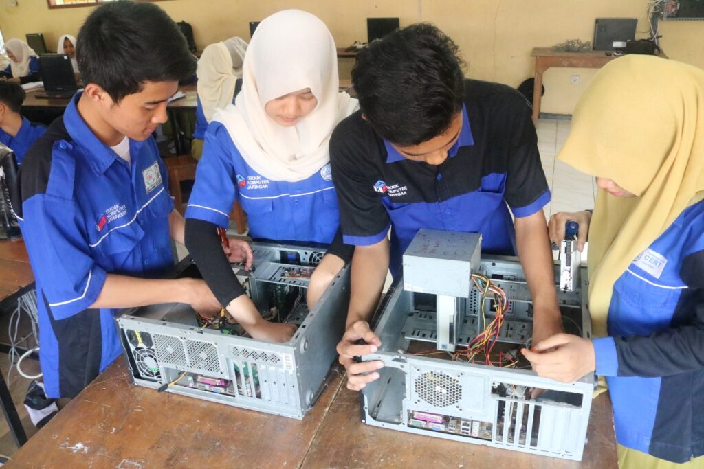

Teknik Komputer Jaringan

TKJ adalah sebuah bidang atau jurusan yang khusus mengajarkan atau berisi pelajaran mengenai cara-cara merakit komputer serta menginstalasi program seperti software di dalamnya. Tentunya ini cocok bagi para penggiat komputer.
Intinya, TKJ adalah sebuah bidang, profesi atau jurusan berbasis teknologi informasi dan komunikasi. Jika didalami dan mengikuti pelajaran dengan benar, tentu saja ilmu yang didapatkan akan berguna di dunia kerja suatu saat nanti.
Multimedia

Berdasarakan difinisi dari para ahli, Multimedia adalah kombinasi tiga elemen, yaitu suara, gambar dan teks (McCormic – 1996). Sedangkan menurut William Ditto. 2006, Multimedia dalam ilmu pengetahuan mencakup beberapa aspek yang saling bersinergi antara teks, grafik, gambar statis, animasi, film dan suara.
Jadi! Bisa disimpulkan bahwa Multimedia adalah sebuah bidang atau jurusan yang berisi berbagai pelajaran dan ilmu keterampilan tentang karya-karya media seperti membuat film dan animasi. Kemudian juga tentang ilmu hal-hal seperti desain kemasan produk, desain poster, undangan, desain promosi dan sebagainya.
Rekayasa Perangkat Lunak
Jika TKJ saat ini fokus dengan pelajaran penggunaan hardware dan software, maka RPL atau Rekayasa Perangkat Lunak atau jurusan yang berisi pelajaran mengenai cara membuatnya, yang dimaksud disini adalah pembuatan software.
RPL secara umum punya nama Software Engineering. Istilah tersebut mulai populer pada tahun 1968 di Software Engineering Conference yang pernah diselenggarakan oleh NATO. RPL adalah jurusan khusus penghasil Programer.